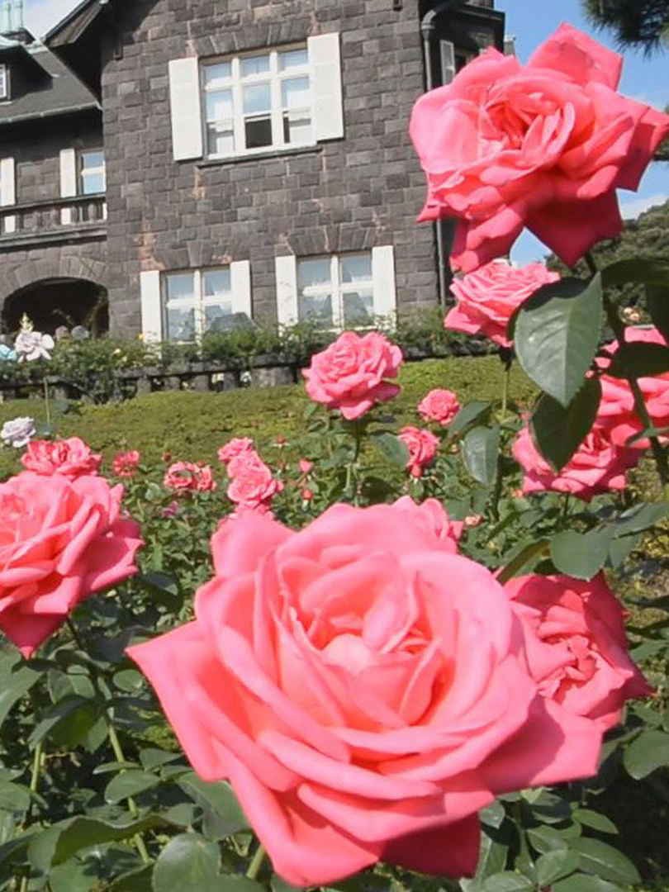

旧古河庭園 四季→春 エリア→東京北部

このスポットには
古河庭園は武蔵野台地の斜面と低地という地形を活かし、北側の小高い丘には洋館を建て、斜面には洋風庭園、そして低地には日本庭園を配したのが特徴です。現在の洋館と洋風庭園の設計者は、英国人ジョサイア・コンドル博士（1852～1920）です。現存する近代の庭園の中でも、極めて良好に保存されている数少ない事例として重要であることから、平成18年1月26日に文化財保護法により国の名勝指定を受けました。
公式サイト→https://www.tokyo-park.or.jp/teien/contents/info034.htmll
このスポットには
こんな歴史が・・・
元々は陸奥宗光の別宅。宗光の次男・潤吉が古河財閥創業者の養子(2代当主)となったため古河家に所有が移った。当時の建物は現存していません。
所在地
東京都北区西ヶ原1-27-39
最寄り駅
東京メトロ南北線 西ヶ原駅